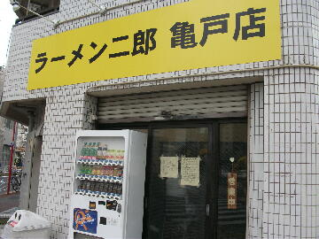
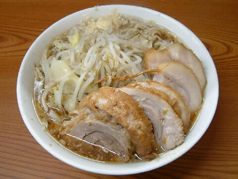
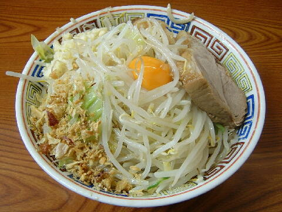
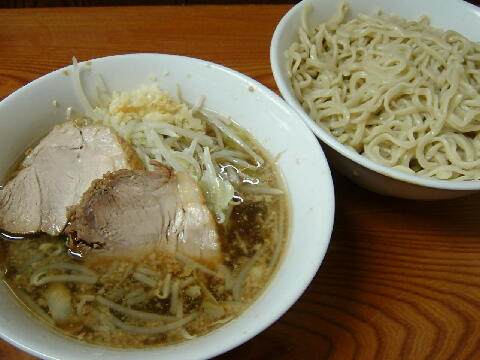

江東区 亀戸 4-35-17
火
11：00〜14：30 17：30〜21：30

ラーメン 730円、ブタ入りラーメン 830円
大盛りラーメン 830円、ブタ入り大ラーメン 930円
汁なし ＋100円、つけ麺 ＋100円
タマネギキムチ 100円、生玉子 50円
本日のトッピング 50円（売切）、本日のトッピング 100円（売切）
店員は、体格の良い店主（藤沢店主の弟）と助手。
白コショウ（ミル）。黒コショウ（ミル）。一味唐辛子。花椒。魚粉。酢。フライドガーリック。
レンゲ有。エコ箸も有。ティッシュ無。名刺無。
BGMは、FM。高校野球（甲子園）開催中はAM。
トッピングは、二郎標準。
ラーメン二郎 亀戸店 亀戸店のTwitter
「ラーメン二郎 亀戸」でヤフー検索
「ラーメン二郎 亀戸」でヤフーリアルタイム検索
「ラーメン二郎 亀戸」でグーグル検索

ブタ入り小ラーメン ニンニク
麺は、プニュプニュした柔らか目のゆで具合の縮れた麺。量はやや多目。
ぶたは、店主と同じく巨大で分厚く、しっかりした食感の＠ブタ。味付けは薄め。
スープは、初代を踏襲したやさしいがしっかりと豚の出汁が出ている醤油系のとても美味いもの。
ヤサイは、モヤシ9：キャベツ1の割合。やや柔らかめ。
ニンニクは、辛みの少ないニンニク。

ラーメン＋汁なし ニンニク
トッピングはラーメンと同じ。
二郎の旨味が詰まったタレに、卵の黄身、フライドオニオンが加わる。
現在ぶたは＠ブタ。

ラーメン＋つけ麺 ニンニク
トッピングはラーメンと同じ。ヤワメ、あつもりはできない。
タレの丼には、ヤサイ、豚、ニンニク。タレは醤油で食わすタイプ。豊富な卓上香辛料で味変できる。
麺の丼には、水でしめられるが、やや暖かさが残った麺のみ。
現在ぶたは＠ブタ。
夏期限定。
ＰＣ店